LLM Architecture Handbook
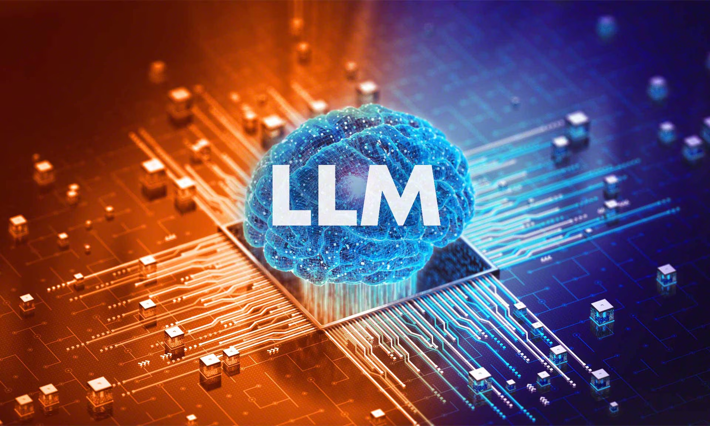
Large Language Models (LLMs) have evolved from experimental AI systems into critical enterprise infrastructure powering applications such as copilots, chatbots, automation systems, and decision intelligence platforms. Unlike traditional machine learning systems, LLMs require a deep integration of distributed computing, memory optimization, and probabilistic modeling. At enterprise scale, challenges such as latency, throughput, cost efficiency, and reliability become dominant concerns. Organizations must design systems that handle millions of requests while maintaining performance and correctness. This handbook focuses strictly on LLM engineering at scale, covering core architecture, inference optimization, retrieval systems, and production deployment strategies required to build robust enterprise-grade LLM applications.
Tokenization
📖 Introduction
Tokenization in Large Language Models is not just a preprocessing step—it directly determines computational cost, latency, and model performance. LLMs do not process words but tokens, which are subword units generated using techniques like Byte Pair Encoding (BPE) or SentencePiece. Every input and output is measured in tokens, and pricing in most APIs is also based on token count. Efficient tokenization reduces sequence length while preserving meaning. Poor tokenization increases cost and memory usage, making systems inefficient. Therefore, tokenization is a critical design decision in enterprise LLM systems.
❓ Why We Need It
- Controls cost (tokens = billing unit)
- Reduces sequence length
- Enables model compatibility
- Improves inference efficiency
📌 When We Need It
- All LLM pipelines
- Chatbots and APIs
- RAG systems
🌍 Real-Life Example
Tokens: ["Chat", "G", "PT", "is", "amazing"]
More tokens → Higher cost 💰
🖼️ Diagram

💻 Python Implementation
from transformers import GPT2Tokenizer
tokenizer = GPT2Tokenizer.from_pretrained("gpt2")
text = "Enterprise LLM systems"
tokens = tokenizer.encode(text)
print("Tokens:", tokens)
print("Token Count:", len(tokens))
KV Cache
📖 Introduction
KV Cache (Key-Value Cache) is the most important optimization technique in LLM inference. During text generation, transformers repeatedly compute attention over previous tokens, which becomes computationally expensive as the sequence grows. KV caching stores previously computed key and value matrices so they can be reused instead of recomputed. This reduces complexity from quadratic to linear and significantly improves performance. Without KV cache, real-time applications like chatbots would be too slow and costly to operate at scale.
❓ Why We Need It
- Reduces computation from O(n²) to O(n)
- Speeds up generation
- Improves throughput
- Essential for real-time systems
📌 When We Need It
- Autoregressive generation (GPT-like models)
- Chat applications
- Streaming inference systems
🌍 Real-Life Example
With Cache: Reuse previous computations → fast ✅
🖼️ Diagram
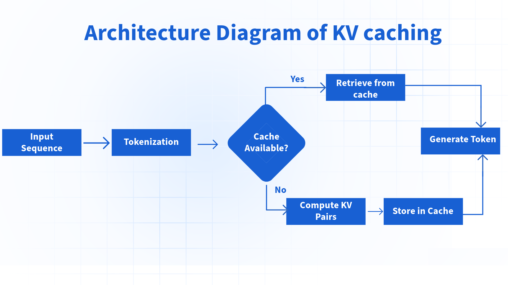
🧠 Mathematical Function
Without Cache: O(n²) With Cache: O(n)
💻 Python Implementation
kv_cache = {}
def compute(token):
if token in kv_cache:
return kv_cache[token]
kv_cache[token] = token * 2
return kv_cache[token]
print(compute(5))
print(compute(5)) # Cached
vLLM Serving Engine
📖 Introduction
vLLM is a high-performance inference engine designed specifically for serving large language models efficiently at scale. Traditional inference systems struggle with GPU memory fragmentation and inefficient batching, which reduces throughput. vLLM solves this using a technique called PagedAttention, which manages KV cache like virtual memory. This allows the system to serve thousands of concurrent requests efficiently. vLLM is widely used in production systems because it maximizes GPU utilization, reduces latency, and improves scalability for enterprise LLM deployments.
❓ Why We Need It
- Handles high concurrency efficiently
- Optimizes GPU memory usage
- Improves throughput and latency
- Supports real-time LLM applications
📌 When We Need It
- Enterprise LLM deployment
- High-traffic APIs
- Chatbots and copilots
🌍 Real-Life Example
With vLLM: 1000+ users → efficient batching ✅
🖼️ Diagram
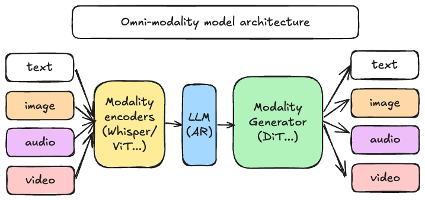
💻 Command
python -m vllm.entrypoints.api_server --model llama
RAG Architecture
📖 Introduction
Retrieval-Augmented Generation (RAG) is a system design pattern that combines retrieval systems with language models to improve accuracy and reduce hallucination. Instead of relying only on the model’s internal knowledge, RAG retrieves relevant documents from external sources such as databases or APIs and injects them into the prompt. This allows the model to generate responses based on up-to-date and factual information. RAG is widely used in enterprise applications like knowledge assistants, customer support bots, and search systems.
❓ Why We Need It
- Reduces hallucination
- Provides real-time knowledge
- Improves factual accuracy
- Enables domain-specific AI systems
📌 When We Need It
- Enterprise knowledge systems
- Customer support AI
- Document-based Q&A systems
🌍 Real-Life Example
RAG: → Retrieve policy document → Inject into prompt → Generate accurate answer
🖼️ Diagram

📐 Flow
💻 Python Implementation
docs = ["LLM = Large Language Model"]
query = "What is LLM?"
retrieved = docs[0]
response = f"Answer based on doc: {retrieved}"
print(response)
Mixture of Experts
📖 Introduction
Mixture of Experts (MoE) enables scaling to massive parameter sizes by activating only a subset of model components per token. This reduces computational cost while maintaining high capacity. Enterprise systems use MoE to balance performance and cost efficiency.
📐 Formula
🖼️ Diagram

Latency Optimization
📖 Introduction
Latency is critical in enterprise applications such as chatbots and copilots. Optimizing latency involves reducing compute, memory access time, and network delays. Techniques include KV caching, batching, quantization, and efficient serving engines.
Enterprise LLM System Design
📖 Introduction
Enterprise LLM systems are not just models—they are distributed systems designed to handle millions of requests with low latency and high reliability. A complete system includes user interfaces, API gateways, load balancers, inference engines, caching layers, and monitoring systems. Each layer must be optimized for scalability and fault tolerance. Designing such systems requires balancing performance, cost, and reliability. Modern architectures also integrate RAG pipelines and streaming inference for better user experience.
❓ Why We Need It
- Handles large-scale traffic
- Ensures reliability and uptime
- Optimizes latency and cost
- Supports real-world applications
📌 When We Need It
- Building production AI systems
- Deploying chatbots and copilots
- Enterprise SaaS platforms
🌍 Real-Life Example
User → API → Load Balancer → LLM → Cache → Response
🖼️ Diagram
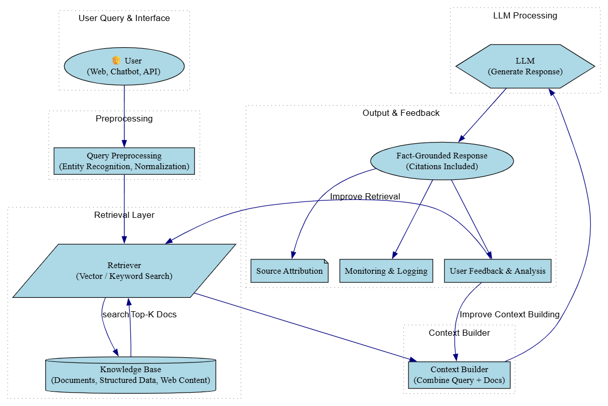
📐 Architecture
💻 Python (API Example)
from fastapi import FastAPI
app = FastAPI()
@app.get("/")
def run():
return {"response": "LLM Output"}
Multi-Region LLM Deployment
📖 Introduction
Multi-region deployment is a system design strategy where LLM services are distributed across multiple geographic locations to ensure low latency, high availability, and fault tolerance. Instead of relying on a single data center, requests are routed to the nearest available region using global load balancing. This reduces response time and ensures that the system remains operational even if one region fails. In large-scale applications like chatbots and AI assistants, downtime or high latency can severely impact user experience. Multi-region architecture solves this by providing redundancy and scalability. However, it introduces challenges such as data synchronization, model consistency, and infrastructure complexity, which must be carefully managed.
❓ Why We Need It
- Ensures high availability (99.99% uptime)
- Reduces latency using geo-routing
- Provides disaster recovery
- Improves user experience globally
📌 When We Need It
- Global AI applications
- Enterprise SaaS platforms
- High-traffic LLM APIs
🌍 Real-Life Example
User in USA → Request goes to US-East server
If US server fails → traffic shifts to Europe ✅
🖼️ Diagram
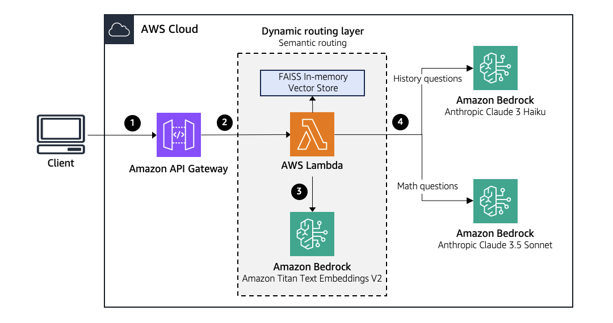
📐 Architecture
💻 Python Example (Routing Logic)
regions = ["us-east", "eu-west", "ap-south"]
def latency(user, region):
return abs(hash(user + region)) % 100 # simulated latency
def route_request(user_location):
return min(regions, key=lambda r: latency(user_location, r))
print(route_request("india-user"))
GPU Orchestration (Kubernetes)
📖 Introduction
GPU orchestration is the process of managing and distributing GPU resources efficiently across multiple workloads in large-scale LLM systems. Since LLMs require significant computational power, manually managing GPUs becomes inefficient and error-prone. Kubernetes provides a powerful orchestration layer that automates deployment, scaling, and resource allocation. It ensures that workloads are distributed across available GPU nodes, enabling better utilization and cost efficiency. Features like autoscaling allow the system to dynamically adjust resources based on demand, ensuring high performance during peak traffic and cost savings during low usage. This is critical for maintaining throughput and minimizing operational costs in enterprise AI systems.
❓ Why We Need It
- Efficient GPU utilization
- Automatic scaling based on demand
- Reduces operational complexity
- Improves system reliability
📌 When We Need It
- Large-scale LLM deployments
- High concurrency systems
- Cloud-based AI infrastructure
🌍 Real-Life Example
Low traffic → unused GPUs are released → cost saved ✅
🖼️ Diagram
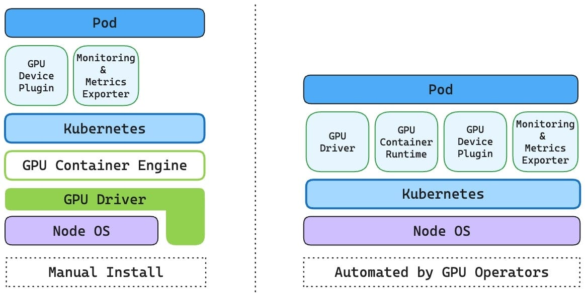
📐 Concept
💻 YAML Example
apiVersion: v1
kind: Pod
metadata:
name: llm-pod
spec:
containers:
- name: llm
image: llm-model
resources:
limits:
nvidia.com/gpu: 1
Vector Database (RAG Core)
📖 Introduction
Vector databases are specialized systems designed to store and retrieve embeddings efficiently using similarity search. Instead of matching exact text, they compare numerical vectors that represent meaning. This allows fast retrieval of relevant documents in RAG systems. Vector databases use approximate nearest neighbor (ANN) algorithms to achieve millisecond-level search performance even on large datasets. They are critical for building real-time knowledge systems.
❓ Why We Need It
- Enables semantic search
- Fast retrieval of relevant data
- Supports RAG systems
- Handles large-scale embeddings
📌 When We Need It
- Search systems
- Knowledge assistants
- RAG pipelines
🌍 Real-Life Example
Vector DB retrieves: "AI is artificial intelligence..."
🖼️ Diagram
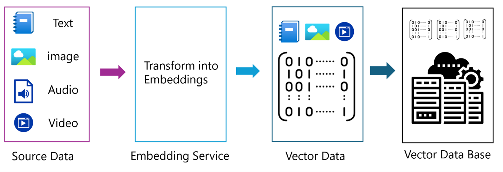
📐 Math
💻 Python Implementation
import numpy as np
def cosine_similarity(a, b):
return np.dot(a,b)/(np.linalg.norm(a)*np.linalg.norm(b))
print(cosine_similarity([1,2],[2,3]))
Streaming Inference
📖 Introduction
Streaming inference allows LLMs to generate and send tokens one by one instead of waiting for the full response. This improves user experience by reducing perceived latency. Instead of waiting several seconds, users see output appearing instantly. Streaming is essential in chat systems and real-time applications. It also helps reduce timeouts and improves interactivity.
❓ Why We Need It
- Improves user experience
- Reduces perceived latency
- Enables real-time interaction
📌 When We Need It
- Chatbots
- Live AI systems
- Interactive applications
🌍 Real-Life Example
With Streaming: "Hello..." → appears instantly ✅
🖼️ Diagram
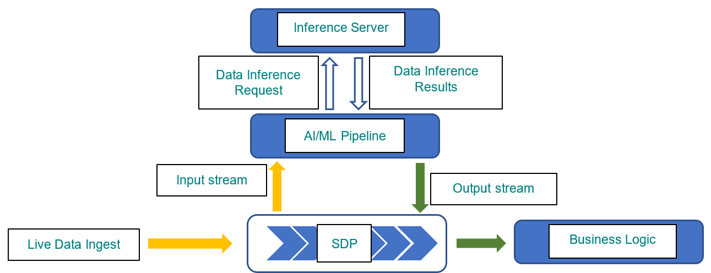
📐 Concept
💻 Python Implementation
for token in ["Hello","world"]:
print(token, end=" ")
Prompt Engineering
📖 Introduction
Prompt engineering is the process of designing inputs to guide LLM behavior effectively. Since LLMs generate outputs based on input context, the quality of prompts directly impacts performance. A well-designed prompt can significantly improve accuracy, reduce hallucination, and control output format. Prompt engineering includes techniques such as zero-shot, few-shot learning, role prompting, and chain-of-thought reasoning. It is one of the most practical and powerful tools for working with LLMs.
❓ Why We Need It
- Improves output quality
- Reduces hallucination
- Controls model behavior
- Enhances task performance
📌 When We Need It
- All LLM applications
- Chatbots
- Automation systems
🌍 Real-Life Example
Good Prompt: "Explain AI in simple terms for a beginner in 3 lines"
🖼️ Diagram
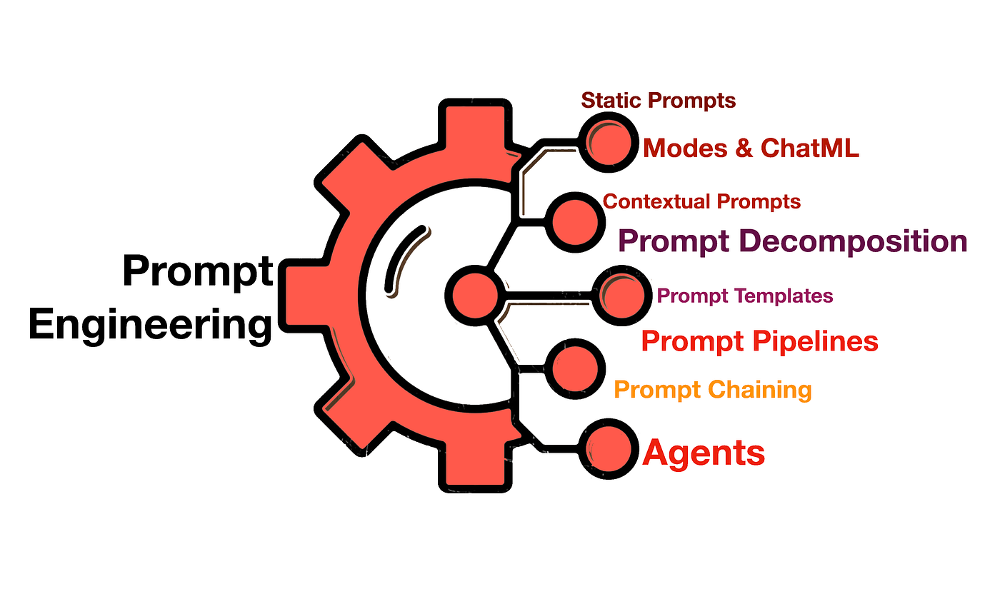
💻 Python Example
prompt = "Explain AI in 3 lines" response = model.generate(prompt) print(response)
Observability & Monitoring
📖 Introduction
Enterprise LLM systems require full observability to track performance, detect failures, and optimize cost. Metrics such as latency, throughput, token usage, and error rates must be monitored in real time. Logging and tracing systems help debug issues across distributed components. Without observability, scaling LLM systems becomes unreliable and expensive.
📐 Metrics
💻 Example
import time
start = time.time()
response = model.generate("Hello")
latency = time.time() - start
print("Latency:", latency)
Cost Engineering
📖 Introduction
Cost is one of the biggest challenges in enterprise LLM deployment. Since pricing is often proportional to token usage and model size, inefficient systems can become extremely expensive. Techniques such as caching, prompt optimization, model distillation, and adaptive routing are used to reduce cost while maintaining performance.
📐 Formula
💻 Example
tokens = 1000 cost_per_token = 0.00001 print(tokens * cost_per_token)
LLM Security
📖 Introduction
Security in LLM systems involves protecting against prompt injection, data leakage, and misuse. Since LLMs process user inputs directly, they are vulnerable to adversarial prompts. Enterprise systems must implement input validation, output filtering, and access control mechanisms to ensure safe operation.
📐 Risk Model
Token Scheduling Engine
📖 Introduction
Token scheduling is a key optimization technique used in high-performance LLM systems. Instead of processing one request at a time, modern systems interleave token generation across multiple requests. This improves GPU utilization and throughput. The scheduler dynamically batches tokens from different sequences, ensuring efficient computation. Designing a scheduler requires balancing latency, fairness, and throughput, making it one of the most complex components in LLM infrastructure.
❓ Why We Need It
- Improves GPU utilization
- Increases throughput
- Reduces idle compute
📌 When We Need It
- High-concurrency systems
- Enterprise LLM APIs
🌍 Real-Life Example
Scheduler: A,X → B,Y → C,Z
🖼️ Diagram
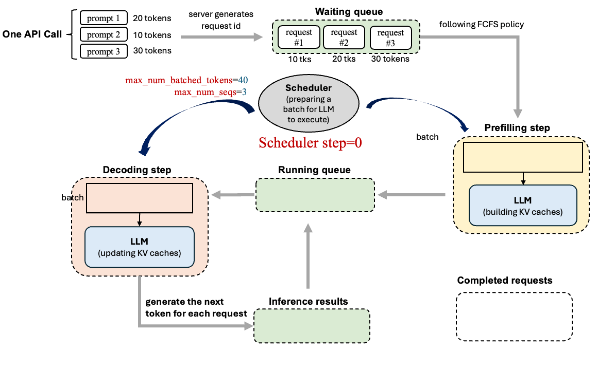
💻 Python Simulation
queue = [["A","B","C"], ["X","Y","Z"]]
while any(queue):
batch = []
for seq in queue:
if seq:
batch.append(seq.pop(0))
print(batch)
Inference Engine Comparison
📖 Introduction
Inference engines are responsible for serving trained LLM models efficiently in production. Different engines are optimized for different goals such as throughput, latency, or flexibility. vLLM is designed for high-throughput serving using techniques like dynamic batching and paged KV cache. NVIDIA Triton is a general-purpose inference server that supports multiple frameworks and deployment patterns. TensorRT is highly optimized for low-latency inference but requires model conversion and tuning. Choosing the right engine depends on system requirements such as request volume, latency constraints, and hardware availability.
❓ Why We Need It
- Optimizes model serving performance
- Improves latency and throughput
- Matches system requirements
📌 When We Need It
- Deploying LLMs in production
- Building scalable APIs
- Optimizing inference performance
🌍 Real-Life Example
Real-time trading system → TensorRT (low latency)
Multi-model deployment → Triton (flexibility)
🖼️ Diagram
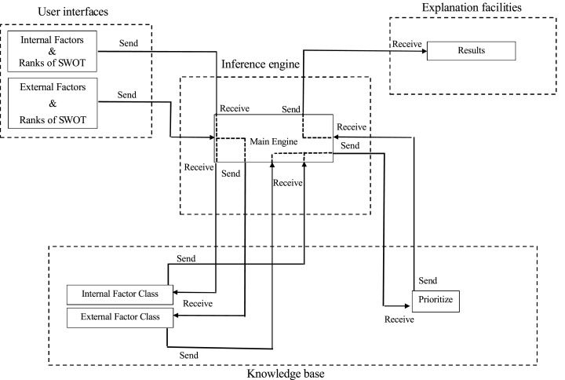
📊 Comparison
Advanced Batching & Queueing
📖 Introduction
Advanced batching is a technique used to improve the efficiency of LLM inference systems by grouping multiple requests together. Instead of processing each request individually, systems combine them into batches to maximize GPU utilization. Queueing strategies determine how requests are ordered and processed. Techniques such as dynamic batching, priority queues, and time slicing ensure that both latency and throughput are optimized. Poor batching leads to wasted GPU resources or slow response times. Therefore, batching and queueing are critical for scaling LLM APIs efficiently.
❓ Why We Need It
- Maximizes GPU utilization
- Improves throughput
- Balances latency and efficiency
📌 When We Need It
- High-traffic LLM systems
- API-based applications
- Real-time AI services
🌍 Real-Life Example
🖼️ Diagram
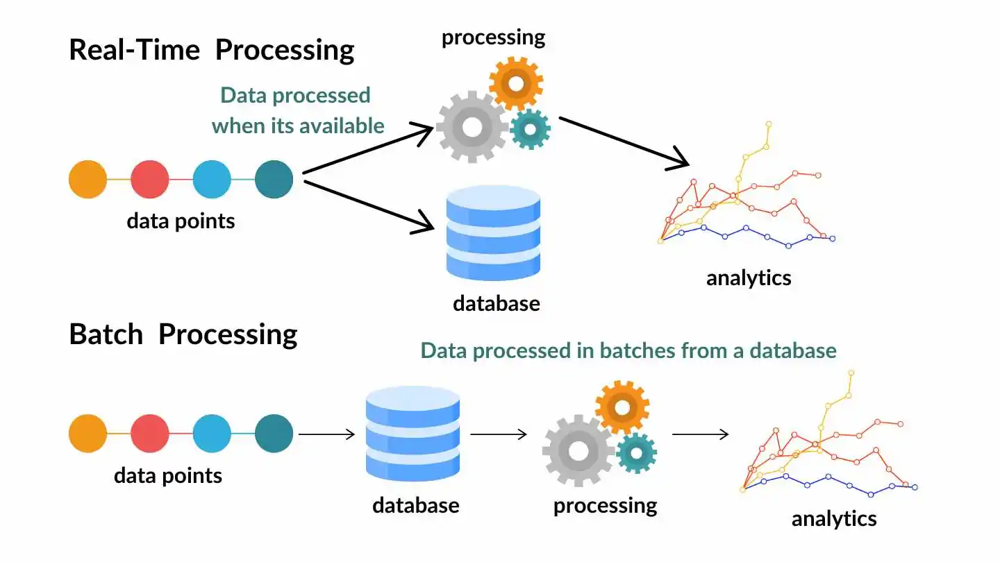
📐 Model
💻 Python Example
from queue import Queue
q = Queue()
def add_request(req):
q.put(req)
def process_batch():
batch = []
while not q.empty():
batch.append(q.get())
return batch
print(process_batch())
MoE Routing Mechanism
📖 Introduction
In Mixture of Experts models, routing determines which subset of experts will process a given token. This is typically implemented using a gating network that outputs probabilities over experts. Only top-k experts are selected, reducing compute while maintaining model capacity. Efficient routing is essential to avoid load imbalance across GPUs.
📐 Formula
🖼️ Diagram
End-to-End LLM Pipeline
📖 Introduction
An end-to-end LLM pipeline represents the complete system architecture required to serve AI applications at scale. It includes multiple layers such as user interface, API gateway, request scheduler, inference engine, caching layer, retrieval system, and monitoring tools. Each component must be optimized for performance, cost, and reliability. This pipeline ensures that user queries are processed efficiently and responses are generated accurately. Large-scale systems like ChatGPT use similar architectures to handle millions of users in real time.
❓ Why We Need It
- Handles full AI workflow
- Ensures scalability and reliability
- Optimizes performance
📌 When We Need It
- Building production AI systems
- Enterprise deployments
- Large-scale applications
🌍 Real-Life Example
🖼️ Diagram
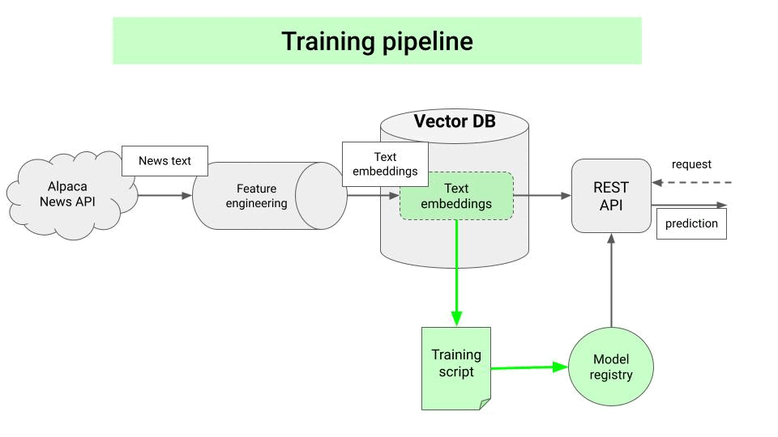
📐 Full Architecture
💻 Python Example
def pipeline(query):
context = "retrieved knowledge"
response = "LLM output based on " + query + context
return response
print(pipeline("What is AI?"))